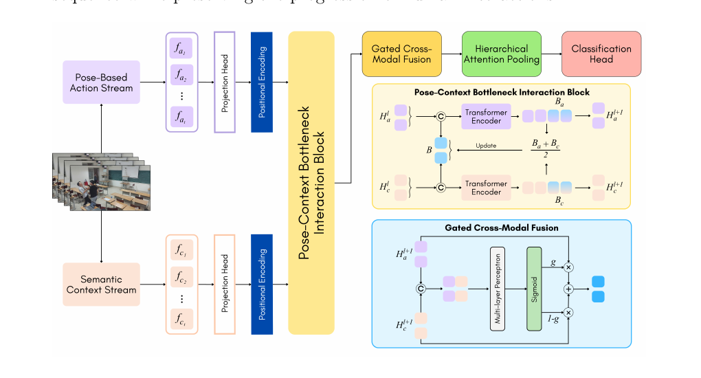

1
Faculty of Information Technology, Ho Chi Minh City University of Education, Ho Chi Minh City, Vietnam
2
Faculty of Computer Science, University of Information Technology, Ho Chi Minh City, Vietnam
3
Vietnam National University, Ho Chi Minh City, Vietnam
The dataset and source code will be made publicly available through the project page.
School violence detection requires fine-grained reasoning over human motion and scene context, as aggressive behaviors may be visually close to benign student interactions under partial occlusion and limited surveillance viewpoints. However, existing violence detection methods and benchmarks are mostly designed for generic fight scenarios, making them less effective in distinguishing visually similar violent and non-violent school interactions. To address this challenge, we propose PCFormer , a pose–context framework for video-based violence detection in educational environments. PCFormer integrates a pose-based action stream and a semantic context stream to jointly capture skeleton-rendered motion patterns and RGB-based scene semantics. A bottleneck-based interaction module mediates compact information exchange between pose and context features without dense cross-attention. The enhanced representations are then combined through reliability-aware gated fusion and hierarchical attention pooling to generate a video-level descriptor for binary violence classification. In addition, the SAVE dataset is introduced as a school-specific benchmark comprising 1,826 classroom videos with aggressive behaviors and visually similar non-violent interactions. PCFormer achieves 93.06% accuracy on SAVE and competitive performance on Movies Fight, Hockey Fight, and Crowd Violence.

Figure 1. Overview of the PCFormer architecture. The model takes an input video, samples frames, and feeds them into two streams. The pose-based action stream uses YOLO11-Pose to extract skeletal features encoded by MobileNet-v3-Small. The semantic context stream uses a fine-tuned HARV Vision Transformer. The modalities interact via a Multimodal Bottleneck Transformer (MBT) , where a shared set of learnable bottleneck tokens mediates compact cross-modal interaction while reducing noisy information exchange and computational overhead. The representations are then merged using Gated Cross-Modal Fusion and summarized via Hierarchical Attention Pooling (HAP). Finally, a lightweight Classification Head predicts the violence probability.
Qualitative results of PCFormer on held-out validation videos. Each clip is processed end-to-end using the trained dual-stream model.
Performance comparison of baseline models on the SAVE dataset .
| Method | Accuracy (%) | Recall (%) | Precision (%) | F1-Score (%) |
|---|---|---|---|---|
| ViViT | 66.67 | 35.68 | 95.65 | 51.97 |
| 3D CNN | 73.22 | 80.54 | 70.62 | 75.25 |
| BrutNet | 79.78 | 69.73 | 87.76 | 77.71 |
| SepConvLSTM | 91.80 | 90.27 | 93.30 | 91.76 |
| PCFormer (Ours) ★ Best | 93.06 | 93.08 | 93.21 | 93.13 |
Performance comparison of studies and models on the Movies Fight dataset .
| Study | Accuracy (%) | Recall (%) | Precision (%) | F1-Score (%) |
|---|---|---|---|---|
| Su et al., 2020 | 98.50 | - | - | - |
| Islam et al., 2021 | 100.00 | - | - | - |
| Hachiuma et al., 2023 | 99.00 | - | - | - |
| Khan et al., 2024 | 99.00 | - | - | 98.00 |
| Dündar et al., 2024 | 100.00 | - | - | - |
| Tran et al., 2025 | 100.00 | 100.00 | 100.00 | 100.00 |
| PCFormer (Ours) | 100.00 | 100.00 | 100.00 | 100.00 |
Performance comparison of studies and models on the Hockey Fight dataset .
| Study | Accuracy (%) | Recall (%) | Precision (%) | F1-Score (%) |
|---|---|---|---|---|
| Su et al., 2020 | 96.80 | - | - | - |
| Islam et al., 2021 | 99.50 | - | - | - |
| Hachiuma et al., 2023 | 99.50 | - | - | - |
| Dündar et al., 2024 | 95.50 | - | - | - |
| Khan et al., 2024 | 98.50 | - | - | 98.00 |
| Tran et al., 2025 | 90.43 | 91.54 | 92.61 | 92.02 |
| Khan et al., 2025 | 97.20 | 95.10 | 95.10 | 95.10 |
| Negre et al., 2026 | 97.00 | 98.00 | 95.00 | 97.00 |
| PCFormer (Ours) | 99.10 | 99.60 | 98.62 | 99.10 |
Performance comparison of studies and models on the Crowd Violence dataset .
| Study | Accuracy (%) | Recall (%) | Precision (%) | F1-Score (%) |
|---|---|---|---|---|
| Varghese et al., 2020 | 92.90 | 92.00 | 93.00 | - |
| Su et al., 2020 | 94.50 | - | - | - |
| Hachiuma et al., 2023 | 94.70 | - | - | - |
| Khan et al., 2024 | 97.00 | - | - | 96.00 |
| Negre et al., 2026 | 90.00 | 97.00 | 86.00 | 91.00 |
| PCFormer (Ours) | 99.60 | 99.20 | 100.00 | 99.59 |
Ablation results on SAVE, reported as mean ± standard deviation (%) over five independent runs.
| Stream mode | Acc. (%) | Pre. (%) | Re. (%) | F1 (%) |
|---|---|---|---|---|
| Semantic Context Stream | 89.13 ± 0.53 | 89.22 ± 2.53 | 89.41 ± 2.18 | 89.26 ± 0.26 |
| Pose-Based Action Stream | 91.26 ± 1.00 | 92.79 ± 1.85 | 89.73 ± 2.51 | 91.20 ± 1.08 |
| Dual (Pose + Context) | 93.06 ± 0.37 | 93.21 ± 1.14 | 93.08 ± 1.50 | 93.13 ± 0.40 |
Ablation study evaluating the effectiveness of the proposed MBT architecture .
| Interaction mode | Acc. (%) | Pre. (%) | Re. (%) | F1 (%) |
|---|---|---|---|---|
| Vanilla cross attention | 91.42 ± 1.68 | 92.36 ± 3.65 | 90.70 ± 2.69 | 91.46 ± 1.56 |
| W/o cross attention | 91.42 ± 1.53 | 91.99 ± 2.46 | 91.03 ± 2.28 | 91.47 ± 1.50 |
| MBT (proposed) | 93.06 ± 0.37 | 93.21 ± 1.14 | 93.08 ± 1.50 | 93.13 ± 0.40 |
Ablation study on the effect of different fusion modes .
| Fusion mode | Acc. (%) | Pre. (%) | Re. (%) | F1 (%) |
|---|---|---|---|---|
| Add | 91.53 ± 1.71 | 92.95 ± 3.07 | 90.16 ± 1.64 | 91.51 ± 1.66 |
| Multiply | 91.37 ± 1.05 | 92.90 ± 2.07 | 89.84 ± 1.81 | 91.32 ± 1.04 |
| Concat | 91.37 ± 2.35 | 92.34 ± 4.73 | 90.81 ± 5.20 | 91.39 ± 2.36 |
| Gated (proposed) | 93.06 ± 0.37 | 93.21 ± 1.14 | 93.08 ± 1.50 | 93.13 ± 0.40 |
Ablation study on the effect of different pooling modes .
| Pooling mode | Acc. (%) | Pre. (%) | Re. (%) | F1 (%) |
|---|---|---|---|---|
| GAP | 89.78 ± 0.63 | 89.69 ± 2.15 | 90.27 ± 3.20 | 89.92 ± 0.77 |
| Max | 91.64 ± 2.52 | 91.38 ± 3.08 | 92.22 ± 2.58 | 91.78 ± 2.44 |
| Hierarchical (proposed) | 93.06 ± 0.37 | 93.21 ± 1.14 | 93.08 ± 1.50 | 93.13 ± 0.40 |
Ablation study on the impact of the number of bottleneck tokens .
| Bottleneck tokens | Acc. (%) | Pre. (%) | Re. (%) | F1 (%) |
|---|---|---|---|---|
| K = 2 | 92.30 ± 0.99 | 92.55 ± 3.06 | 92.32 ± 2.04 | 92.38 ± 0.85 |
| K = 4 | 93.06 ± 0.37 | 93.21 ± 1.14 | 93.08 ± 1.50 | 93.13 ± 0.40 |
| K = 6 | 91.20 ± 0.53 | 95.17 ± 0.83 | 87.03 ± 1.83 | 90.90 ± 0.66 |
| K = 8 | 90.00 ± 0.79 | 94.49 ± 2.63 | 85.30 ± 2.66 | 89.60 ± 0.84 |